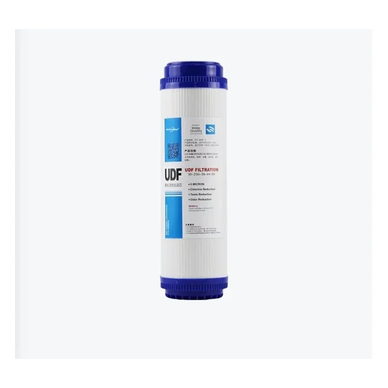
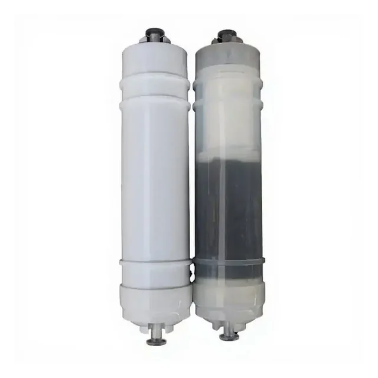

GAC un UDF granulētās aktīvās ogles kārtridži
Produkti
Saistītie produkti


Granulētas aktīvās ogles kārtridžs ar plakanu gala vāciņu. Plūsmas virziens, gala konstrukcija un korpusa savietojamība jāapstiprina.
GAC filtra kārtridžs ar plakanu gala vāciņu
Nosūtīt pieprasījumu
Vairāku atšķirīgu filtra kārtridžu komplekts secīgai ūdens priekšattīrīšanai un pēcapstrādei. Faktiskais elementu sastāvs jāapstiprina katram pasūtījumam.
Daudzpakāpju filtra kārtridžu komplekts
Nosūtīt pieprasījumuPieprasīt tehnisko piedāvājumu
Izvēles ceļvedis
GAC un UDF granulētās aktīvās ogles kārtridži
Ko salīdzināt
GAC un UDF kārtridžos svarīgi ir ogles veids, granulu sadalījums, ūdens plūsmas virziens, korpusa materiāls, izmērs un pozīcija daudzpakāpju sistēmā.
Pirms piedāvājuma jāsalīdzina savienojums vai gala vāciņš, uzstādīšanas orientācija, saderīgais korpuss, daudzums un marķējums. Konkrētu kalpošanas laiku nevar noteikt bez ieplūdes ūdens un patēriņa datiem.
Granulētās aktīvās ogles kārtridža konstrukcija ietekmē montāžas virzienu un savietojamību. Salīdziniet korpusa izmēru, ieejas un izejas risinājumu, ogles materiālu un paredzēto vietu sistēmā. Nomaiņas intervālu nevar noteikt tikai pēc kalendāra, jo to ietekmē patēriņš un ieplūdes ūdens.
Pirms piedāvājuma
Piedāvājumam norādiet ogles veidu, kārtridža izmēru, gala savienojumu, plūsmas virzienu, sistēmas posmu, daudzumu un iepakojumu.
Jautājumi
Informācija pircējiem
Ar ko atšķiras GAC un UDF kārtridža izvēle?
Nosaukumi var tikt lietoti līdzīgām granulētās ogles konfigurācijām, tādēļ jāpārbauda ogles materiāls, korpuss, plūsmas virziens un gala savienojums.
Vai kārtridžu var uzstādīt jebkurā virzienā?
Nē. Ievades un izvades virziens jāpārbauda pēc konkrētā korpusa un kārtridža konstrukcijas.
Ko norādīt nomaiņas kārtridža pieprasījumā?
Norādiet pašreizējā elementa izmēru, savienojumu, fotoattēlu, sistēmas posmu, daudzumu un iepakojumu.